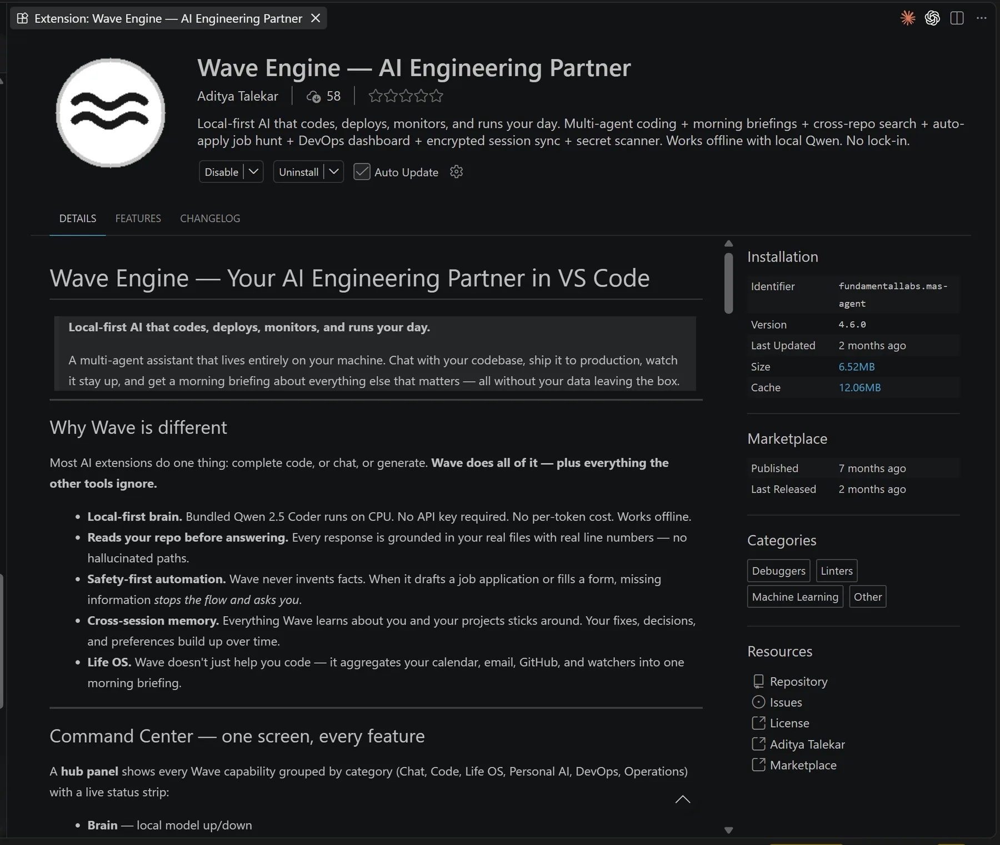

Wave Engine
A local-first AI engineering partner for VS Code that reads your repository before it answers — and checks its own work before you see it.
- Role
- Sole engineer & founder, Fundamental Labs
- Timeline
- Jan 2026 — present
v0.0.9 → v4.6 - Stack
- Python · FastAPI · llama.cpp · Qwen2.5-Coder · TypeScript
- Links
- VS Code Marketplace ↗
Source is private
- Problem
- AI coding assistants guess when they can't see your repository — and send your code to the cloud.
- Solution
- A local 4-bit model directing 107 specialist agents over a repo knowledge graph, with critique and confidence gating before anything is shown.
- Impact
- 767 downloads, 30+ active users · ~40s → 5s responses · works fully offline.
- My role
- Sole engineer — architecture, Python backend, VS Code extension, releases.

01 — OverviewOne small model. A hundred specialists. Every answer checked.
Most AI coding tools are a single large model behind an API key. Wave Engine takes the opposite bet: a 3-billion-parameter model running 4-bit on your own CPU acts as the “brain”, and a team of deterministic specialist agents does the evidence-gathering — mapping the repo, reading files, tracing architecture, running tests. The model only reasons over what the agents actually found, and its answer is critiqued and confidence-scored before it is shown.
It ships as a VS Code extension with a bundled Python backend, works fully offline, and can optionally route to Claude, GPT, Gemini or any OpenAI-compatible endpoint when you want cloud-scale reasoning.
02 — The problemAI coding help breaks when it can't see the system.
Producing plausible code is easy. The hard part is grounding every answer in the actual repository, keeping the developer in control, and doing it without shipping their code to a third party. I framed the product around three gaps:
Context gap
Generic assistants miss project structure, entry points, dependencies and prior decisions — so they hallucinate file paths and APIs.
Trust gap
A useful answer needs traceable evidence (real files, real line numbers), verification, and graceful fallbacks when the model isn't sure.
Delivery gap
Teams need a path from prompt → plan → generated files → validation → repair, with a human approving every write.
Add two constraints of my own: it had to run on an ordinary 8 GB laptop, and it had to be free to run — no per-token cost, no data leaving the machine.
03 — ArchitectureDeterministic agents gather evidence. The model narrates it.
The extension talks to a FastAPI backend on 127.0.0.1. An intent router (Qwen first, rules as a fallback) splits traffic into an answer path and a build path. Both share the same local model runtime.
The answer path (centre) and build path (right) share one 4-bit model. Dashed teal lines are model calls; the orange loop is self-correction.
04 — Anatomy of an answerWhat happens between “Enter” and the reply.
- Route. The intent router decides whether you're asking a question, requesting a change, or running a command. Anything that writes to disk is held for approval.
- Gather. The orchestrator posts the task to a shared blackboard. Agents bid for sub-tasks based on capability match, current load and track record, then run a staged pipeline: repo map → rule checks → memory lookup → hypothesis → causal analysis → deep read → architecture trace → tests.
- Critique first. Before any text is generated, an answer-critic agent lists what a correct answer must include. Those points are injected into the prompt.
- Reason in parallel. Two or three Qwen chains run with different evidence strategies; a confidence scorer picks the strongest.
- Check, then retry. The winner is re-scored on relevance, completeness, specificity and length. Below 0.55 it is regenerated with the critic's feedback.
- Remember. The result is cached and useful fix patterns are stored, ranked later with BM25, so the next similar question is faster and better.
A 3B model on its own is not a reliable coder. A 3B model that only has to explain evidence it was handed — and is graded before it speaks — is surprisingly good. The intelligence lives in the system, not the weights.
05 — Key decisionsThe engineering that made a small model viable.
Confidence-gated self-correction, calibrated for a small model
Every answer is scored before it's shown. The retry threshold was re-tuned specifically for a 3B model (0.55) — strict enough to catch weak answers, loose enough not to loop forever on CPU.
Latency: don't generate what you've already generated
An answer cache keyed by SHA-256 of prompt + repo state, with fuzzy matching (Jaccard ≥ 0.82), skips generation entirely on repeats. A byte-identical system prefix lets parallel calls reuse the KV cache, and n-gram speculative decoding speeds up what's left — together taking most prompts from ~40s to ~5s.
Fit the hardware you're given
The runtime adapts to free RAM at launch — 32K context with 3 parallel slots, down to 8K with 1 — and quantises the KV cache to 8-bit. The same build runs on a developer workstation and a student laptop.
A capability market, not a fixed pipeline
Agents bid for work (capability match × load × reliability, max five bidders). Reliability is tracked over time, so agents that keep failing stop winning tasks.
Constrained tool use
Tool calls are forced through a GBNF grammar so a small model can't emit malformed JSON, and the loop stops if the same error hash appears twice or after 15 iterations — no infinite repair spirals.
Safety by default
Writes, shell commands and network access require approval (with workspace- and session-level grants). Path traversal is blocked, secrets are sanitised, attachments are parsed as data, and sessions are isolated — backed by a dedicated security test suite.
Useful before any model is connected
A zero-LLM analysis layer — 56 symbolic rules across Python, JS/TS and Go, dependency graphs for 6+ languages, pattern-based security checks — gives real diagnostics with no model at all.
06 — The 107 agentsCode, council and configuration.
The agent roster is deliberately layered so it can grow without code changes:
| 17 core agents | Python classes for the analysis pipeline — repo mapper, deep reader, architecture tracer, causal analyst, repair planner, test runner, answer critic and more. |
|---|---|
| 5 council agents | Architect, CodeGen, Tester, Reviewer, Optimizer — run in rounds; code is approved only at consensus ≥ 0.7 with no critical issues. |
| 85 declarative agents | Defined in Markdown/YAML and loaded at runtime — new specialists without touching the engine. |
They're organised into 14 families:
08 — ResultsShipped, used and still improving.
Wave Engine has been live on the Marketplace since March 2026 under the Fundamental Labs publisher, with 767 downloads, 30+ active users and 106 updates. Beyond coding, it grew a “Life OS” — morning briefings across calendar, email and GitHub, cross-repo search, a DevOps dashboard and a secret scanner — all running locally.



07 — Feature inventoryEverything that ships in v4.6.
Command Center
A hub panel grouping every capability — Chat, Code, Life OS, Personal AI, DevOps, Operations — with a live status strip for the local model and backend.
Zero-LLM analysis
Dependency graphs for 6+ languages, 56 symbolic rules across Python, JS/TS and Go, and 14 pattern-based security detections — all without a model.
Wave Builder
Turns a prompt or an uploaded design into an app scaffold through a 12-stage generation pipeline with safe writes, command checks and quality gates.
Deep context mode
Up to 500K tokens of repository context for whole-codebase reasoning when a cloud model is connected.
Life OS
A morning briefing that pulls calendar, e-mail, GitHub and watchers into one view — locally.
DevOps & security
A DevOps dashboard, cross-repo search, a secret scanner and encrypted session sync.
Permissions
Balanced and Trusted modes, with workspace- and session-level grants for file writes, terminal commands and network access.
Surface area
48 VS Code commands and 157 REST endpoints on the local FastAPI backend.
09 — What's nextWhere I'm taking it.
- Public benchmarks. Evaluate the self-correction loop against a SWE-bench-style suite and publish the numbers, not just latency.
- Brain-and-hands by default. A newer loop where Qwen plans and agents act behind deterministic patch and runtime gates is built and feature-flagged; it ships on once it beats the current path on evals.
- Hosted backend. An optional managed backend for teams that want onboarding in one click.